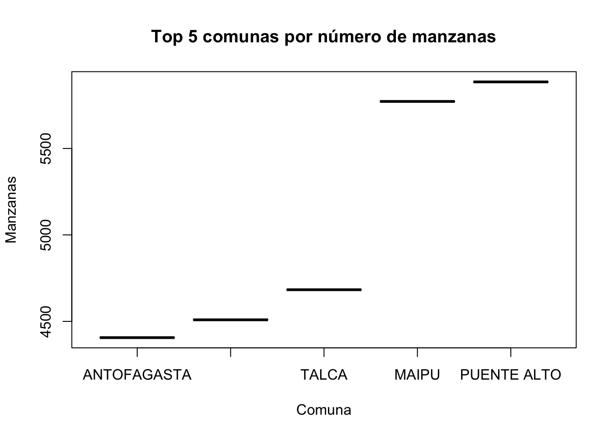
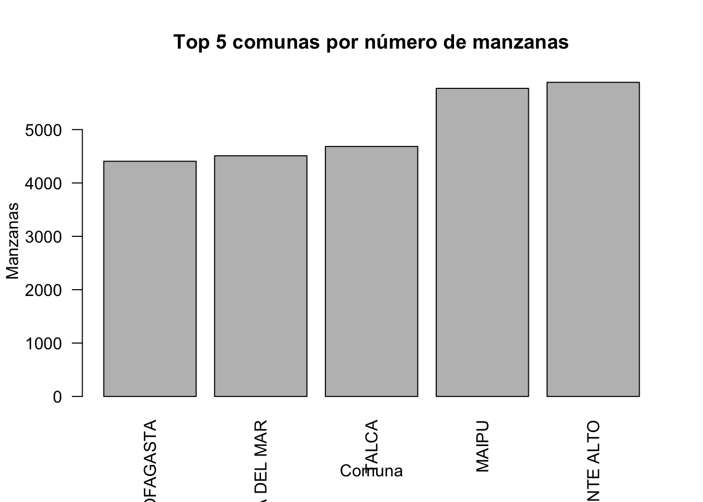
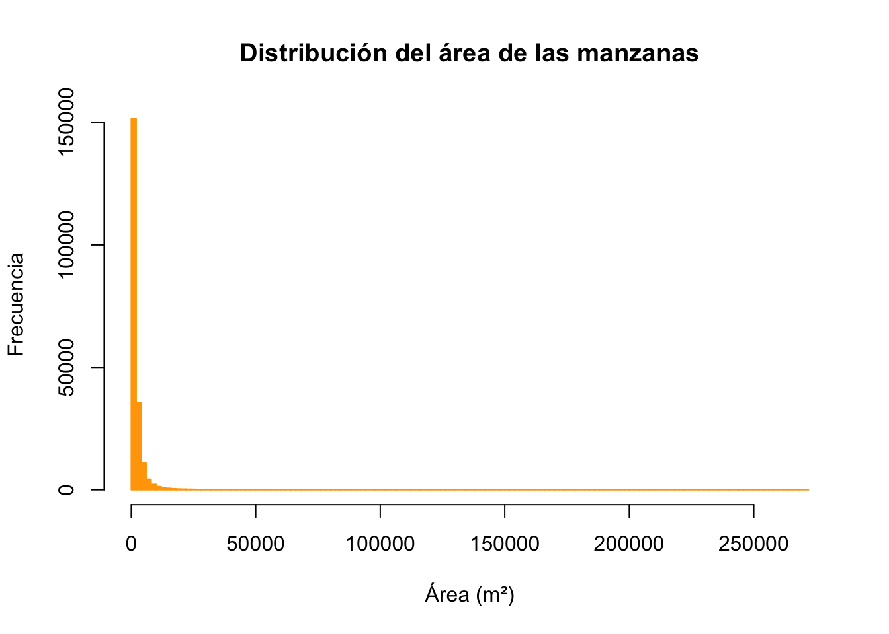
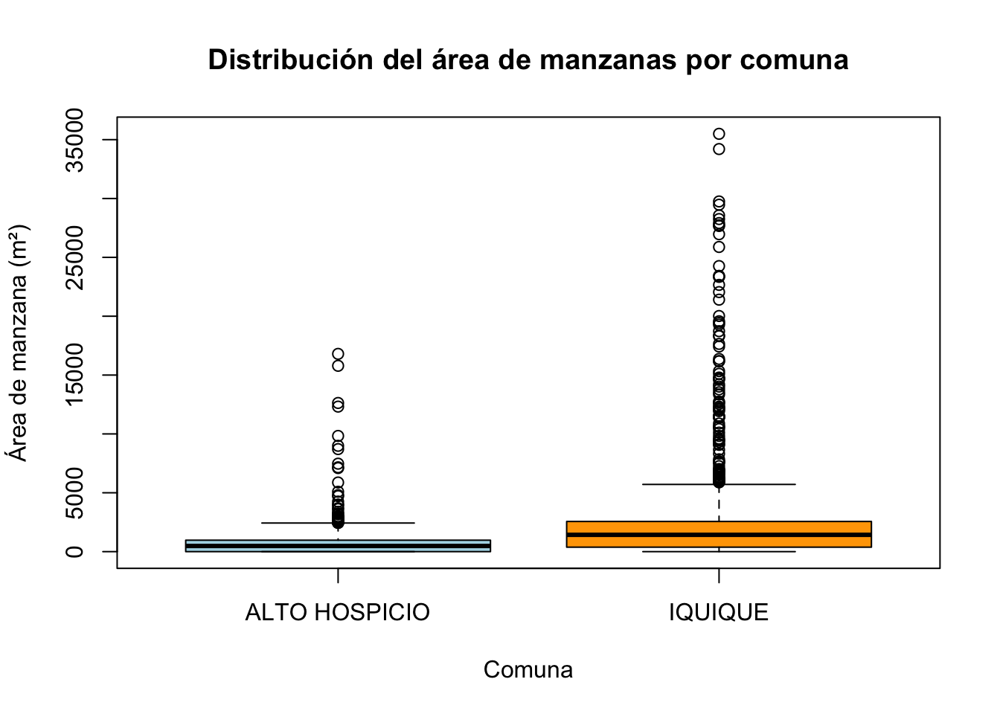
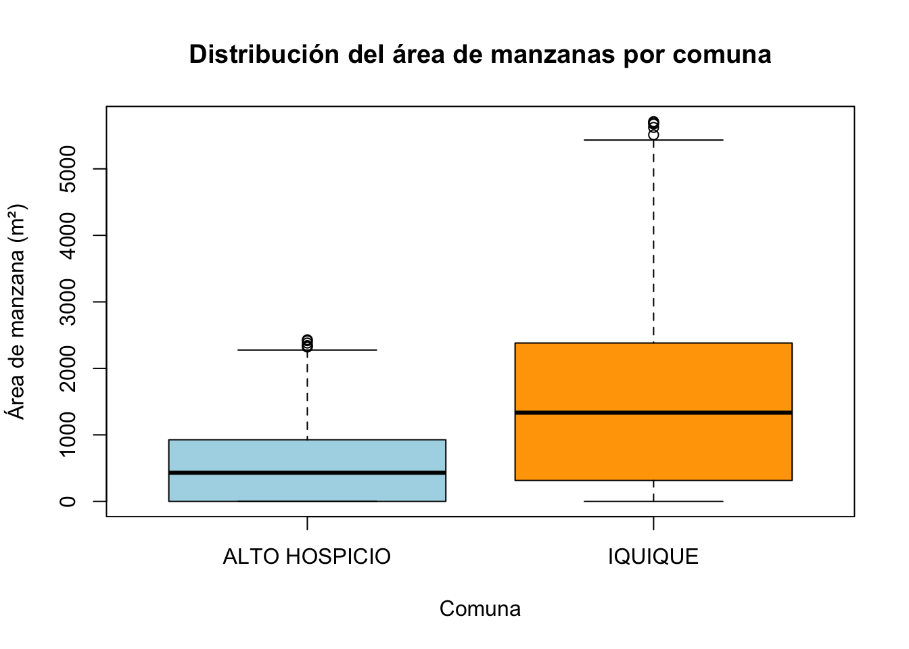
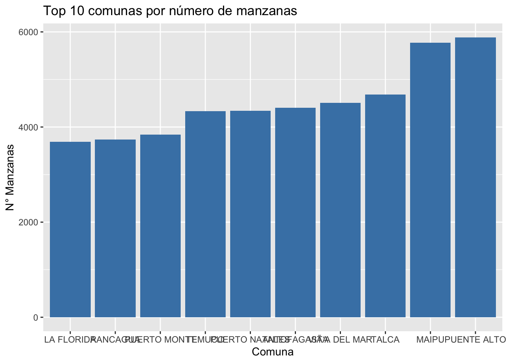
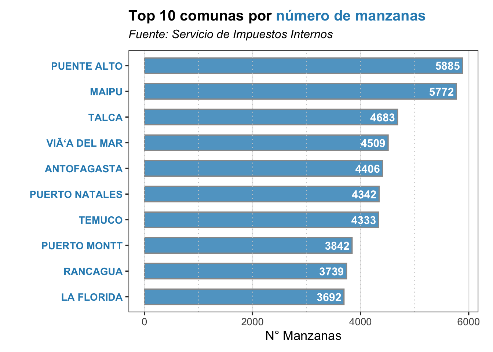
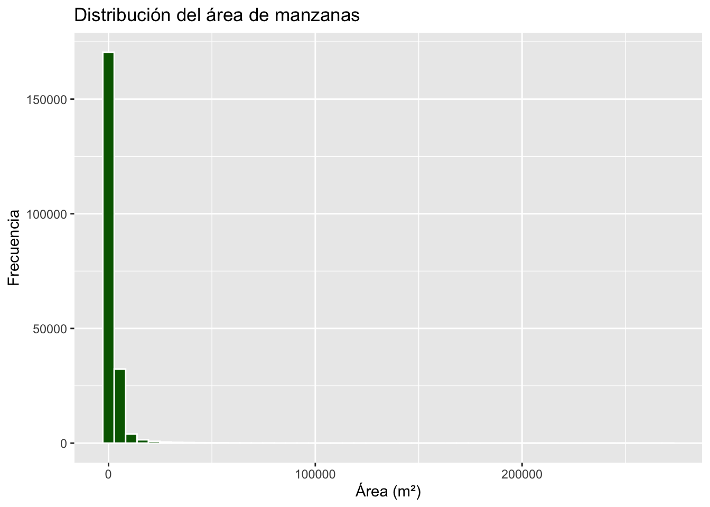
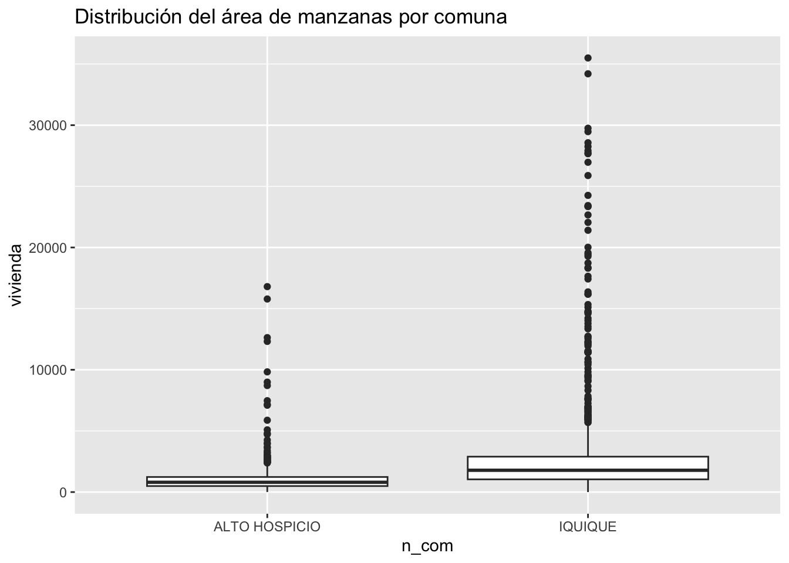
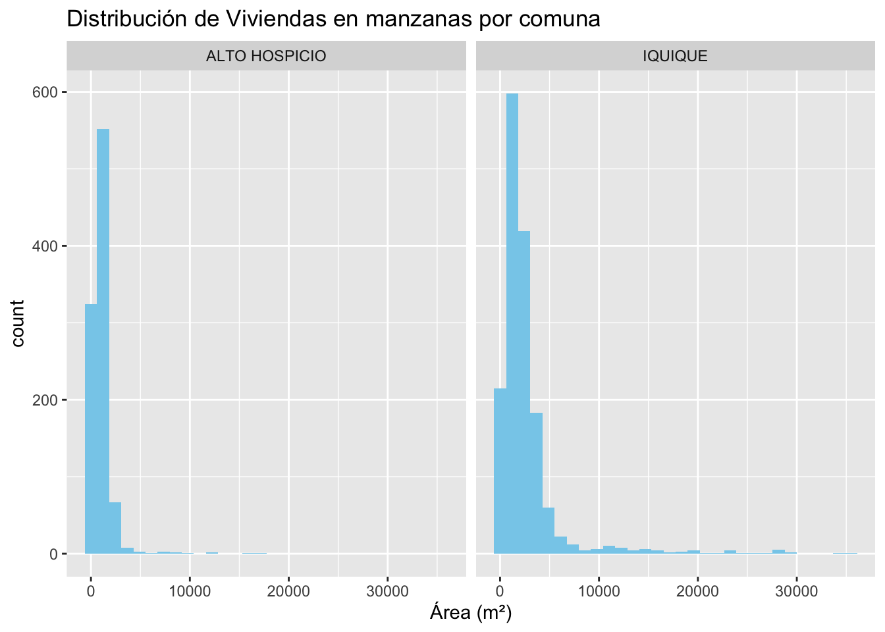

library(dplyr)
library(sf)5 Visualizaciones en R
Introducción a la generación de Gráficos en R
5.1 1. Introducción
La visualización es clave en el análisis espacial porque permite identificar patrones, anomalías y tendencias de manera intuitiva. En este módulo aprenderás a transformar datos tabulares en gráficos que comuniquen información relevante, usando ejemplos reales del catastro de edificaciones (tabla tbl_sii).
El objetivo no es producir un gráfico por cada variable disponible, sino escoger una representación que responda con claridad una pregunta de política pública. Un gráfico bien elegido permite reconocer brechas, priorizar territorios o grupos y comunicar evidencia a personas que no necesariamente trabajan con datos. Un gráfico mal elegido puede ocultar diferencias importantes o sugerir conclusiones que los datos no permiten sostener.
5.1.1 Antes de graficar: una pregunta, una decisión
Antes de abrir R, formule la pregunta que desea responder y determine qué tipo de variable tiene. Esto simplifica la elección del gráfico y ayuda a evitar visualizaciones decorativas. Por ejemplo, no es lo mismo preguntar “¿qué comuna registra más denuncias?” que “¿cómo han cambiado las denuncias en el tiempo?” o “¿existe relación entre pobreza y acceso a áreas verdes?”.
| Si la pregunta busca… | Tipo de información | Gráfico que suele ayudar | Ejemplo en políticas públicas |
|---|---|---|---|
| Comparar categorías o territorios | Categoría y cantidad, tasa o porcentaje | Barras | Comparar la tasa de delitos violentos por comuna. |
| Mostrar un cambio o una evolución | Fecha y medida | Líneas | Observar la evolución mensual de las listas de espera en salud. |
| Conocer cómo se distribuyen los casos | Una variable numérica | Histograma | Identificar si la superficie de vivienda se concentra en valores bajos o altos. |
| Comparar distribuciones entre grupos | Una variable numérica y una categoría | Boxplot | Comparar la distribución de tiempos de viaje a un CESFAM entre comunas. |
| Examinar la relación entre dos medidas | Dos variables numéricas | Dispersión | Explorar si las comunas con mayor pobreza presentan menor cobertura de áreas verdes. |
| Identificar patrones y desigualdades territoriales | Una medida asociada a una ubicación | Mapa temático | Localizar sectores con alta vulnerabilidad y baja cercanía a equipamiento público. |
Esta tabla es una guía inicial, no una regla rígida. La decisión también depende de la audiencia y de la acción que se espera apoyar. Para una reunión de gestión, un gráfico de barras ordenado puede facilitar la priorización; para diagnosticar una desigualdad, un mapa o un boxplot puede aportar una mirada que una tabla no muestra.
Regla práctica para elegir un gráfico
Empiece por completar la frase: “Quiero que la audiencia pueda ver que…”. Si la frase termina en “una comuna supera a otra”, pruebe barras; si termina en “el problema crece o disminuye”, pruebe una línea; si termina en “los casos están muy dispersos o tienen valores inusuales”, pruebe un histograma o un boxplot. Si la ubicación cambia la interpretación, incorpore un mapa y revise el capítulo de datos espaciales.
5.1.2 Cómo leer y comunicar un gráfico con responsabilidad
En políticas públicas, los gráficos suelen informar decisiones que afectan recursos, territorios y personas. Por ello, antes de compartirlos, revise:
- Unidad de comparación: para comparar comunas de distinto tamaño, normalmente una tasa, proporción o indicador por habitante es más informativo que el total de casos.
- Periodo y fuente: indique qué fecha cubren los datos y de dónde provienen; un aumento puede reflejar más registro y no necesariamente más ocurrencia del fenómeno.
- Escala de los ejes: no recorte el eje vertical de un gráfico de barras si ello exagera diferencias pequeñas. Explique las transformaciones o escalas no habituales.
- Incertidumbre y contexto: una diferencia visual no demuestra por sí sola una causa. Complementar con contexto territorial y otras fuentes de evidencia evita conclusiones apresuradas.
- Legibilidad: use un título que comunique el hallazgo, ejes con unidades, una paleta con contraste y etiquetas legibles. Evite el exceso de colores, efectos 3D y leyendas innecesarias.
5.1.3 Cuándo utilizar los gráficos de este capítulo
Los ejemplos siguientes trabajan con información de manzanas y edificaciones del SII. Aunque la base no corresponde a un programa público específico, permite practicar preguntas habituales: ¿dónde se concentra la ciudad?, ¿cómo se distribuye una característica de las viviendas?, ¿hay diferencias entre comunas? La misma lógica se puede aplicar a registros de salud, educación, seguridad, vivienda o medio ambiente.
Barras. Úselas para comparar una cantidad, tasa o porcentaje entre un número acotado de categorías. Ordenarlas de mayor a menor hace más visible la comparación. Son apropiadas, por ejemplo, para mostrar la cobertura de salas cuna por comuna o el porcentaje de hogares sin acceso adecuado a transporte. Si hay muchas categorías, muestre las más relevantes o agrupe el resto: una lista larga de barras dificulta la lectura.
Histogramas. Úselos cuando necesite comprender la distribución de una variable numérica: qué valores son frecuentes, si existen concentraciones o colas largas y si hay valores extremos. En gestión habitacional podrían mostrar la distribución del tamaño de las viviendas; en salud, la de los tiempos de espera. El número de intervalos (bins) modifica el aspecto del gráfico, por lo que conviene probar alternativas sin cambiar la escala ni ocultar valores relevantes.
Boxplots. Úselos para comparar la distribución de una medida entre dos o más grupos. Muestran el valor central, la dispersión y posibles valores atípicos, lo que los hace útiles para contrastar, por ejemplo, el tiempo de respuesta de ambulancias entre servicios de salud. No reemplazan la revisión de los datos: un valor atípico puede ser un error de registro, pero también puede revelar una situación territorial que merece atención.
Líneas y dispersión. Aunque no se programan en esta sección, son dos recursos frecuentes. Un gráfico de líneas es adecuado cuando el orden temporal es central —por ejemplo, la evolución trimestral de la deserción escolar—; no conviene usarlo para categorías sin orden. Un gráfico de dispersión permite explorar si dos indicadores varían conjuntamente, como desempleo y solicitudes de subsidio. Describe una asociación, no prueba que una variable cause la otra.
Mapas temáticos. Úselos cuando la ubicación y la vecindad entre territorios son parte de la pregunta. Un mapa de tasas de delitos puede revelar concentraciones que un ranking comunal no muestra. Para comparar territorios, revise cuidadosamente que el indicador esté estandarizado y que la simbología no haga parecer equivalentes áreas con poblaciones muy distintas. Los mapas se abordarán con mayor profundidad en los capítulos de datos espaciales.
Ejemplo de razonamiento aplicado
Suponga que un municipio quiere fortalecer el acceso a cuidados. Para decidir dónde profundizar el diagnóstico, puede usar: (1) barras para comparar la cobertura de cupos por comuna; (2) un histograma para conocer cómo se distribuyen los tiempos de viaje de los hogares; (3) un boxplot para comparar esos tiempos entre grupos de ingresos; y (4) un mapa para ubicar los sectores que combinan baja cobertura y mayor necesidad. Cada gráfico responde una pregunta distinta; juntos ofrecen evidencia más útil que una sola visualización.
5.2 Visualización básica de tablas
5.2.1 Explorando la tabla de datos
Cargar las librerias:
Leemos los datos y mostramos su estructura:
# Leer insumos del SII y descartar geometría
tbl_sii <- readRDS("data/sii/mz_constru_SII.rds") %>%
st_drop_geometry() # Solo la tabla
# Estructura general
glimpse(tbl_sii)Rows: 210,662
Columns: 10
$ n_com <chr> "IQUIQUE", "IQUIQUE", "ALTO HOSPICIO", "ALTO HOSPICIO", "ALTO…
$ manzana <chr> "1201-0", "1201-0", "1211-0", "1211-0", "1211-0", "1211-0", "…
$ reg <dbl> 1, 1, 1, 1, 1, 1, 1, 1, 1, 1, 1, 1, 1, 1, 1, 1, 1, 1, 1, 1, 1…
$ cod_com <dbl> 1201, 1201, 1211, 1211, 1211, 1211, 1211, 1211, 1211, 1211, 1…
$ num_manz <dbl> 0, 0, 0, 0, 0, 0, 0, 0, 0, 0, 0, 0, 0, 0, 0, 0, 0, 0, 0, 0, 0…
$ oficinas <dbl> 0, 0, 0, 0, 0, 0, 0, 0, 0, 0, 0, 0, 0, 0, 0, 0, 0, 0, 0, 0, 0…
$ comercio <dbl> 0, 0, 0, 0, 0, 0, 0, 0, 0, 0, 0, 0, 0, 0, 0, 0, 0, 0, 0, 0, 0…
$ vivienda <dbl> 0, 0, 0, 0, 0, 0, 0, 0, 0, 0, 0, 0, 0, 0, 0, 0, 0, 0, 0, 0, 0…
$ total <dbl> 0, 0, 0, 0, 0, 0, 0, 0, 0, 0, 0, 0, 0, 0, 0, 0, 0, 0, 0, 0, 0…
$ AREA <dbl> 585.2757, 17290.7424, 1859.4714, 441.8273, 204.6194, 1200.079…¿Qué información contiene la tabla?
- Nombre de la comuna (
n_com) - Código y número de manzana, región y comuna
- Cantidad de oficinas, comercio, viviendas por manzana
- Área de cada manzana (m²)
5.2.2 Tablas de frecuencia y resumen
¿Qué comunas tienen más manzanas registradas?
Frecuencia de manzanas por comuna con la función count. Posteriormente se ordenarán los resultados con la función arrange y con la función desc está ordenación será de mayor a menor.
tbl_sii %>%
count(n_com, name = "n_manzanas") %>%
arrange(desc(n_manzanas)) %>%
head(10)# A tibble: 10 × 2
n_com n_manzanas
<chr> <int>
1 PUENTE ALTO 5885
2 MAIPU 5772
3 TALCA 4683
4 VIÑA DEL MAR 4509
5 ANTOFAGASTA 4406
6 PUERTO NATALES 4342
7 TEMUCO 4333
8 PUERTO MONTT 3842
9 RANCAGUA 3739
10 LA FLORIDA 3692
Interpretación: Identificar concentración urbana o cobertura de datos.
Resumen estadístico básico de variables cuantitativas
tbl_sii %>%
summarise(
min_area = min(AREA, na.rm = TRUE),
max_area = max(AREA, na.rm = TRUE),
media_area = mean(AREA, na.rm = TRUE),
mediana_area = median(AREA, na.rm = TRUE)
)# A tibble: 1 × 4
min_area max_area media_area mediana_area
<dbl> <dbl> <dbl> <dbl>
1 100. 30397061138. 1685666. 4227.5.3 Visualización gráfica

A continaución se realizarán visualizaciones gráficas con R base
5.3.1 Diagramas de barras (frecuencia de manzanas por comuna)
En este punto que generaremos algunos gráficos que visualicen la cantidad de manzanas que existen por comuna.
# 1. Preparar los datos
cant_com = 5
top_mz <- tbl_sii %>%
count(n_com) %>%
top_n(cant_com, n) %>%
arrange(n) # Opcional: para graficar en orden ascendenteGráfico base de R
# 2. Crear el gráfico base R
plot_baseR <- plot(
top_mz$n ~ reorder(top_mz$n_com, top_mz$n), #Nombres de comunas ordenados por cantidad
type = "h",
main = paste0("Top ", cant_com, " comunas por número de manzanas"),
ylab = "Manzanas",
xlab = "Comuna"
)
Gráfico de barras con barplot base de R
# Nombres de comunas ordenados por cantidad
names_com <- reorder(top_mz$n_com, top_mz$n)
# Crear gráfico de barras
barplot_baseR <- barplot(
height = top_mz$n,
names.arg = names_com,
las = 2, # Gira las etiquetas
main = paste0("Top ", cant_com, " comunas por número de manzanas"),
ylab = "Manzanas",
xlab = "Comuna"
)
5.3.2 Histograma base en R
Se realizará un histograma con área viviendas construídas de las manzanas del SII.
options(scipen = 999) # descartar la notación científica
hist_baseR <- hist(tbl_sii$vivienda, breaks = 100,
main = "Distribución del área de las manzanas",
xlab = "Área (m²)", ylab = "Frecuencia",
col = "orange", border = "orange")
5.3.3 Boxplot
Haremos un ejemplo de comparación de las distribuciones cantidad metros cuadrados de vivienda entre dos comunas del norte de Chile
com_norte <- tbl_sii %>%
filter(n_com %in% c("IQUIQUE", "ALTO HOSPICIO"))
boxplot_baseR <- boxplot(
vivienda ~ n_com,
data = com_norte,
main = "Distribución del área de manzanas por comuna",
xlab = "Comuna",
ylab = "Área de manzana (m²)",
col = c("lightblue", "orange")
)
valores outlier (atípicos)
¿Cómo identificar los valores outlier (atípicos) que aparecen en el boxplot?
- ¿Cómo los marca el boxplot?
- Los círculos que ves sobre las cajas son outliers según el criterio de Tukey: Valores mayores que el tercer cuartil + 1.5 x rango intercuartil (IQR), o menores que el primer cuartil - 1.5 x IQR.
- ¿Cómo extraer esos valores en R?
Supongamos que queremos identificar los outliers de cada comuna:
com_norte_sin_outliers <- com_norte %>%
group_by(n_com) %>%
mutate(
Q1 = quantile(vivienda, 0.25, na.rm = TRUE),
Q3 = quantile(vivienda, 0.75, na.rm = TRUE),
IQR = Q3 - Q1,
outlier = vivienda < (Q1 - 1.5 * IQR) | vivienda > (Q3 + 1.5 * IQR)) %>%
filter(!outlier)
# Eliminar filas donde outlier es TRUE
boxplot(
vivienda ~ n_com,
data = com_norte_sin_outliers,
main = "Distribución del área de manzanas por comuna",
xlab = "Comuna",
ylab = "Área de manzana (m²)",
col = c("lightblue", "orange")
)
5.4 Visualización avanzada con ggplot2

La librería ggplot2 es uno de los sistemas más potentes y versátiles para la visualización de datos en R. Basado en la “gramática de los gráficos”, permite construir visualizaciones complejas y altamente personalizables de manera estructurada y reproducible.
Con ggplot2 puedes crear desde gráficos básicos como barras, histogramas y dispersión, hasta visualizaciones avanzadas, mapas y gráficos interactivos. La sintaxis está orientada a la composición modular: cada capa del gráfico (datos, geometría, escalas, temas, etiquetas) se define y ajusta de forma clara y coherente.
5.4.1 Gráficos de Barra con ggplot2
Versión Básica
library(ggplot2)
# 1. Preparar los datos
cant_com = 10
top_mz <- tbl_sii %>%
count(n_com) %>%
top_n(cant_com, n) %>%
arrange(n) # Opcional: para graficar en orden ascendente
bar_basico <- ggplot(data =top_mz, aes(x = reorder(n_com, n), y = n)) +
geom_bar(stat = "identity", fill = "steelblue") +
labs(title = paste0("Top ", cant_com, " comunas por número de manzanas"), x = "Comuna", y = "N° Manzanas")
bar_basico
Versión Mejorada
Mejoras o cambios que se pueden hacer con los gráficos
library(scales) # Para etiquetas bonitas
library(ggtext) # Opcional: etiquetas enriquecidas (si lo tienes instalado)
bar_avanzado <- ggplot(data = top_mz, aes(x = reorder(n_com, n), y = n)) +
# Barra principal con color personalizado y borde
geom_bar(stat = "identity", fill = "#2B8CBE",
width = 0.6, color = "gray60", alpha = 0.8) +
# Línea horizontal cada 1.000 manzanas
geom_hline(yintercept = seq(0, max(top_mz$n, na.rm=TRUE), by = 1000),
linetype = "dotted", color = "gray80", linewidth = 0.4) +
# Etiquetas con el valor encima de cada barra
geom_text(aes(label = n),
hjust = 1.1, size = 4, fontface = "bold", color = "white") +
# Cambiar la orientación
coord_flip() +
# Etiquetas y títulos enriquecidos
labs(
title = "Top 10 comunas por <span style='color:#2B8CBE'>número de manzanas</span>",
subtitle = "Fuente: Servicio de Impuestos Internos",
x = "",
y = "N° Manzanas"
) +
# Tema elegante, fuentes y tamaños
theme_bw(base_size = 13) +
theme(
plot.title = element_markdown(face = "bold", size = 15),
plot.subtitle = element_text(face = "italic", size = 12, margin = margin(b = 10)),
axis.text.x = element_text(angle = 0, hjust = 0.5, vjust = 1, color = "gray30"),
axis.text.y = element_text(face = "bold", color = "#2B8CBE"),
panel.grid.major.y = element_blank(), # Sin grid horizontal
panel.grid.minor = element_blank(),
plot.margin = margin(10, 15, 10, 15)
)
bar_avanzado
5.4.2 Histograma ggplot2
hist_basico <- ggplot(tbl_sii, aes(x = vivienda)) +
geom_histogram(bins = 50, fill = "darkgreen", color = "white") +
labs(title = "Distribución del área de manzanas", x = "Área (m²)", y = "Frecuencia")
hist_basico
5.4.3 Boxplot ggplot2
com_norte <- tbl_sii %>%
filter(n_com %in% c("IQUIQUE", "ALTO HOSPICIO")) %>%
filter(vivienda > 0)
boxplot_basico <- ggplot(data = com_norte, aes(x = n_com, y = vivienda)) +
geom_boxplot() +
labs(title = "Distribución del área de manzanas por comuna")
boxplot_basico
5.4.4 Facet por comunas con ggplot2
facet_basico <- ggplot(com_norte, aes(x = vivienda)) +
geom_histogram(bins = 30, fill = "skyblue") +
facet_wrap(~ n_com) +
labs(title = "Distribución de Viviendas en manzanas por comuna", x = "Área (m²)")
facet_basico
Actividad: Mejorar el estilo del gráficos
Tomar los gráficos anteriores (hist_basico, boxplot_basico, facet_basico), agregar y modificar las siguientes elementos:
Agregar:
- Subtítulo
- agregar
themea su gusto (bw, minimal, gray, light, dark, etc.)
Modficar
- Color de
filla su gusto en formato hex - La cantidad de
bins - El nombre del eje y
5.5 Interactividad con Plotly

Plotly es una librería que permite convertir tus gráficos en R en visualizaciones interactivas, facilitando la exploración y el análisis visual de los datos. Plotly es especialmente útil para presentar resultados a audiencias no técnicas, ya que habilita funciones como zoom, hover (ver valores al pasar el mouse), selección dinámica y exportación directa.
Puedes crear gráficos desde cero con la función plot_ly() o transformar gráficos estáticos de ggplot2 en interactivos usando ggplotly().
La documentación oficial de Plotly para R ofrece numerosos ejemplos, tutoriales y guías para sacar el máximo provecho de sus capacidades interactivas en tus proyectos de análisis de datos.
A continuación mostraremos un ejemplo simple como transformar un gráfico estático generado con ggplot en un gráfico dinámico tipo plotly utilizando la función ggplotly()
library(plotly)
bar_interactivo <- ggplotly(bar_avanzado)
bar_interactivo
Actividad: Transformar los gráficos estáticos a dinámicos
Utilizando la función ggplotly() convierta todo los gráficos -que en la actividad anterior se debía mejorar- en gráficos dinámicos.
5.6 Guardar los Gráficos
A continuación estaremos las diferentes opciones para guardar los gráficos generados en esa sección, utilizando la librería base, ggplot2 y plotly. Para esto previamente generaremos una carpeta que llamaremos plots en la cual guardaremos todas las imágenes generadas.
5.6.1 Guardar en plot base
# Guardar gráfico como imagen PNG
png("plots/mi_grafico_base.png", width = 800, height = 600, res = 120)
# Nombres de comunas ordenados por cantidad
names_com <- reorder(top_mz$n_com, top_mz$n)
# Crear gráfico de barras
barplot_baseR <- barplot(
height = top_mz$n,
names.arg = names_com,
las = 2, # Gira las etiquetas
main = paste0("Top ", cant_com, " comunas por número de manzanas"),
ylab = "Manzanas",
xlab = "Comuna"
)
dev.off()
# Guardar como PDF (ideal para calidad vectorial)
pdf("plots/mi_grafico_base.pdf", width = 7, height = 5)
# Nombres de comunas ordenados por cantidad
names_com <- reorder(top_mz$n_com, top_mz$n)
# Crear gráfico de barras
barplot_baseR <- barplot(
height = top_mz$n,
names.arg = names_com,
las = 2, # Gira las etiquetas
main = paste0("Top ", cant_com, " comunas por número de manzanas"),
ylab = "Manzanas",
xlab = "Comuna"
)
dev.off()5.6.2 Guardar Gráficos con ggplot2
Con ggplot2 lo más práctico es usar la función ggsave(), que detecta el último gráfico generado por ggplot o puedes especificar el objeto del gráfico.
bar_avanzado
# Guardar como PNG (por defecto 300 dpi, ideal para publicaciones)
ggsave(filename = "plots/grafico_ggplot2.png",
plot = bar_avanzado,
width = 8, height = 6, dpi = 300)
# Guardar como PDF (calidad vectorial)
ggsave(filename = "plots/grafico_ggplot2.pdf",
plot = bar_avanzado,
width = 7, height = 5)
# Otros formatos disponibles: jpg, svg, tiff, eps- Puedes definir el tamaño en width y height (pulgadas por defecto, puedes usar units = “cm”).
- Puedes guardar directamente el último gráfico generado si no usas el argumento plot =.
5.6.3 Guardar Gráficos con plotly
Para guardar gráficos interactivos de plotly, utiliza htmlwidgets::saveWidget() para exportar como archivo HTML autónomo (ideal para compartir interactividad completa).
library(htmlwidgets)
# Guardar como HTML (abrible en cualquier navegador)
saveWidget(widget = bar_interactivo, file = "plots/grafico_interactivo_plotly.html",
selfcontained = TRUE)Exportar a imagen estática (png, jpg, svg) desde el gráfico dinámico se puede hacer usando la función webshot::webshot() en combinación con htmlwidgets.
# Instalar webshot si no lo tienes
# install.packages("webshot")
# webshot::install_phantomjs()
# Exportar a PNG usando webshot
library(webshot)
webshot(url = "plots/grafico_interactivo_plotly.html",
file = "plots/grafico_interactivo_plotly.png",
vwidth = 900, vheight = 700)5.7 Referencias:
- Histogramas: https://bookdown.org/jboscomendoza/r-principiantes4/histogramas.html
- Boxplot: https://bookdown.org/jboscomendoza/r-principiantes4/diagramas-de-caja.html
- ggplt2: ggplot2: Elegant Graphics for Data Analysis https://ggplot2-book.org/
- Paletas de Colores https://colorbrewer2.org/#type=sequential&scheme=BuGn&n=3